Áudios Drama
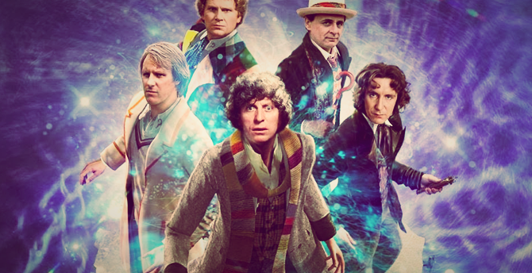O que são os áudio dramas de Doctor Who?
Os áudio dramas são aventuras do Doutor e seus companheiros (as) produzidas, como o nome sugere, apenas em áudio. “Mas como funciona?” Os efeitos sonoros e toda produção nos dão a impressão de estarmos assistindo a um episódio de TV, pois imaginamos as cenas em nossas mentes enquanto ouvimos a história, como se estivéssemos lendo um livro. O formato de histórias em áudio no Brasil atualmente não é muito comum, mas um bom exemplo de comparação são as rádio novelas.
Os áudio dramas de Doctor Who são produzidos há muitos anos e são várias as histórias. Existem diversas séries próprias de quase todos os Doutores e diversos Spin Off’s, etc.
Como faço para ouvir?
“Mas se é feito tudo em inglês, como eu vou entender se não souber o idioma?” Um de nossos projetos é fazer a tradução dos áudio dramas para traze-los ao site, tanto online, quanto para download.
“Como é feita a tradução de um áudio?” Bom, pegamos os scripts (roteiros) das aventuras, traduzimos e os transformamos em legenda. Convertemos o áudio em vídeo, adicionamos as legendas e pronto.
Nem todas as aventuras são como “episódios de TV sem imagem” (que é o modelo que chamamos de Full Cast), outros modelos variam entre narração com apenas um ator (que também interpreta os protagonistas, formato das Short Trips) ou versões parecidas com esses modelos, como as Companion Chronicles. Com o passar do tempo, você se acostuma com o estilo de todos e vai escolhendo o seu favorito.
BBC Rádio e Argo Records
Big Finish Productions
AudioGo – Home of BBC Audio Books
1º Doctor
2º Doctor
3º Doctor
4º Doctor
Doctor Who – Exploration Earth: The Time Machine
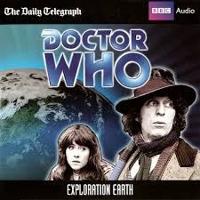Sarah percebe que o Doutor está escondendo algo dela e sabe que não pode ser algo bom. Então a TARDIS automaticamente volta 4,5 bilhões de anos no passado, para os primórdios do planeta Terra.
Legendado
Doctor Who – Exploration Earth: The Time Machine (Animação)
Sarah percebe que o Doutor está escondendo algo dela e sabe que não pode ser algo bom. Então a TARDIS automaticamente volta 4,5 bilhões de anos no passado, para os primórdios do planeta Terra.
Legendado
Doctor Who: The Light at the End
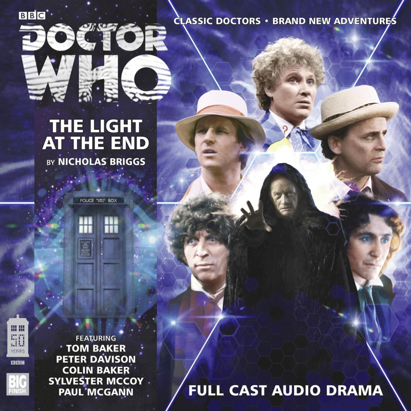É o dia em que a vida de Bob Dovie é destruída. É também um dia que desencadeia uma cadeia catastrófica de eventos que força as oito primeiras encarnações do Doutor a lutar por sua própria existência. À medida que um caos misterioso e insidioso se desenrola dentro da TARDIS.
Legendado
5º Doctor
6º Doctor
Doctor Who – Slipback
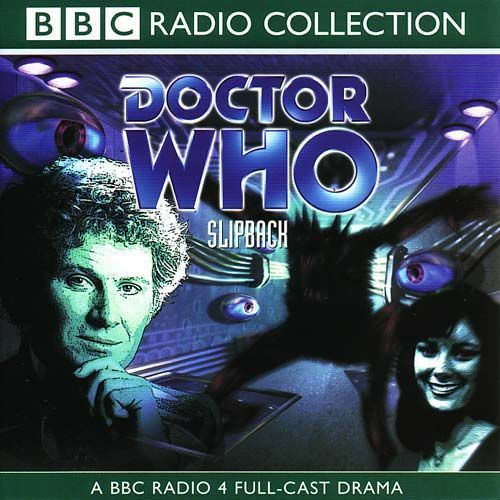O sexto doutor e Peri compartilham uma aventura a bordo de uma nave estelar adquirida por seu computador de dupla personalidade, que tenta levar o navio de volta ao alvorecer do universo e recomeçar a vida.
Legendado
7º Doctor
8º Doctor
Doctor Who: Chimes of The Midnight
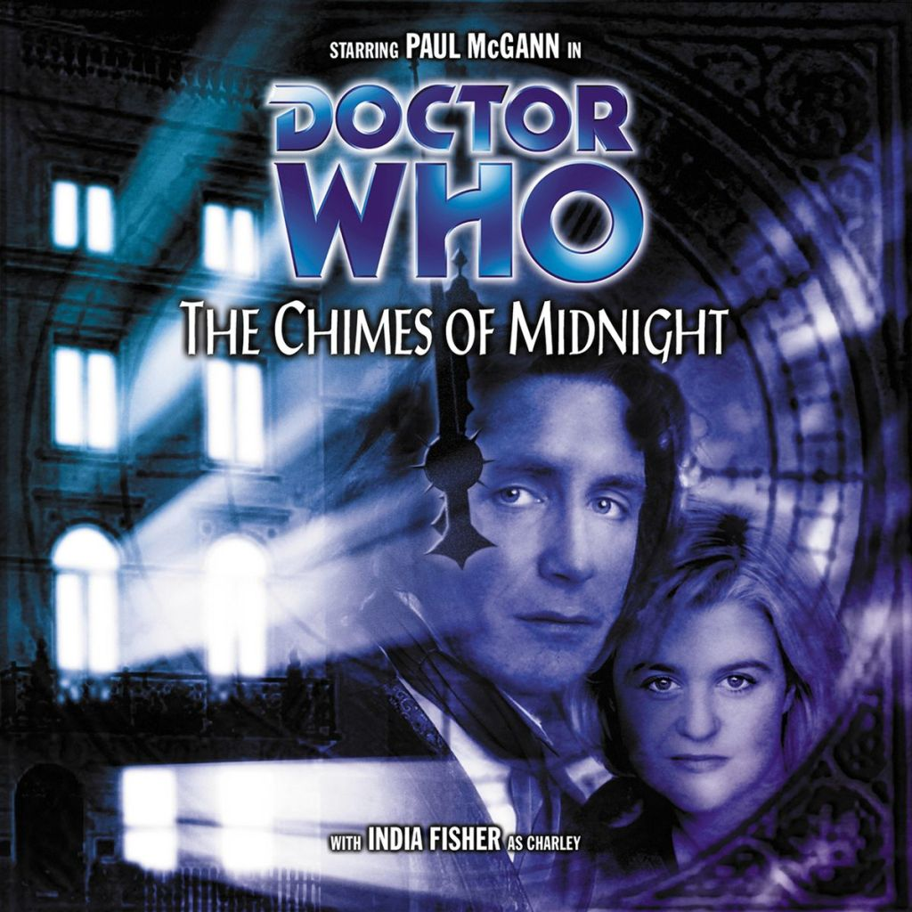Era a noite antes do Natal, e por toda a casa nenhuma criatura estava se mexendo. Algo escondido nas sombras. Algo que mata os servos de uma antiga mansão , da maneira mais brutal e macabra possível. Exatamente no toque da hora, a cada hora, enquanto o relógio do avô marca a meia-noite.
Legendado
Doctor Who: Shada (Animação)
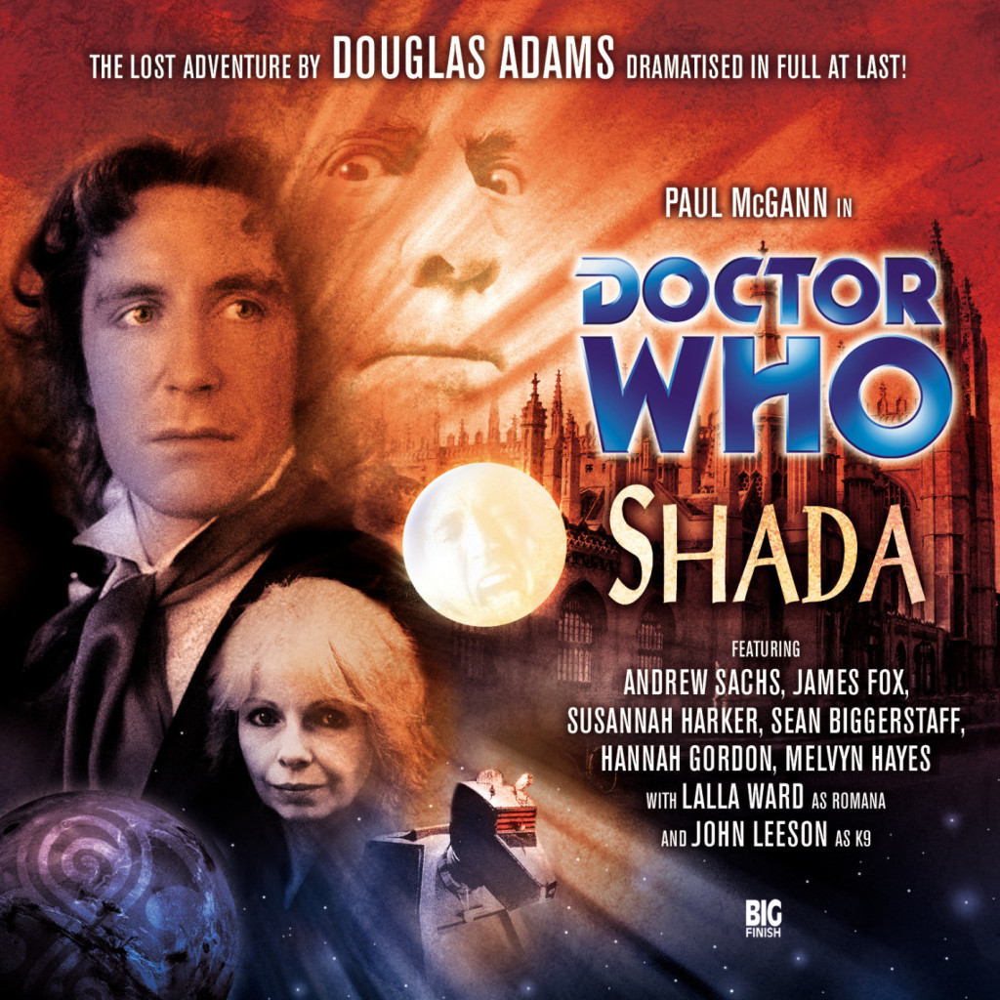O doutor tem uma série de assuntos inacabados. Reunido com seus velhos amigos Romana e K9, ele responde a uma convocação do professor Chronotis, um lorde do tempo aposentado que agora vive a vida acadêmica em uma faculdade de Cambridge.
Legendado
Doctor Who: Scherzo (Em Breve)
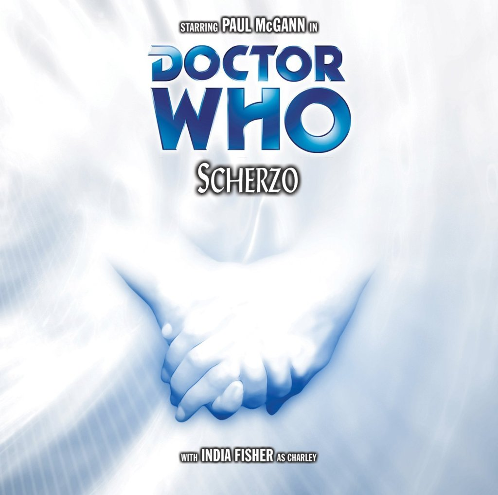Era uma vez… Havia dois amigos, e juntos eles viajaram pelo cosmos. Eles frustravam tiranos e derrotavam monstros, corrigiam erros onde quer que fossem. Eles exploraram o futuro distante e o passado distante, novos mundos e galáxias, lugares além da imaginação.
(Legendado)
War Doctor
Doctor Who: War Doctor – Only the monstrous

Enquanto os Daleks formam sua frota temporal para um ataque final a Gallifrey, algo antigo está esperando por eles em Omega One. E um sacrifício deverá ser feito.
Legendado
Doctor Who: War Doctor – Infernal Devices
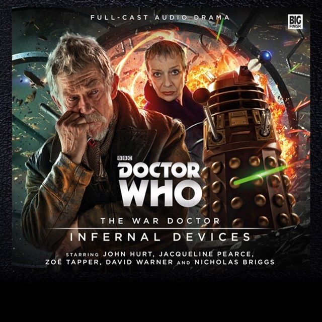No meio da Guerra do Tempo, Daleks e Time Lords carregam todas as armas que encontram, desencadeando uma devastação incalculável.
Legendado
Doctor Who: War Doctor – Agentes do Caos
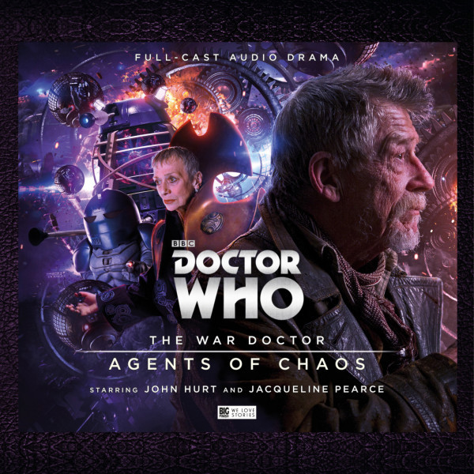 Legendado
Doctor Who: War Doctor – Victims Of War
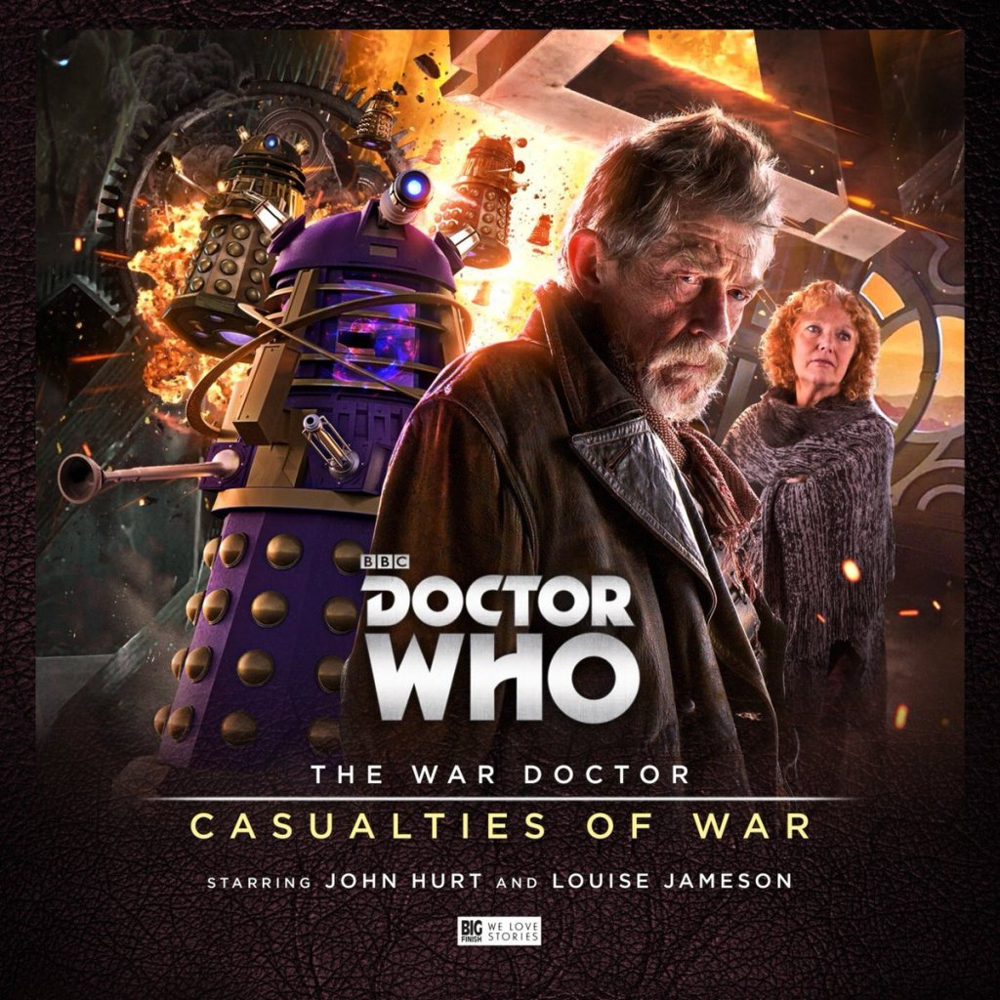O Doutor da Guerra e o Cardeal Ollistra estão presos longe de suas forças do Senhor do tempo, com Daleks se aproximando, destruindo tudo o que está entre eles. Eles devem pedir a ajuda de novos amigos e idosos para voltar à linha de frente.
Legendado
9º Doctor
10º Doctor
Doctor Who: As Aventuras do décimo doutor Volume 1
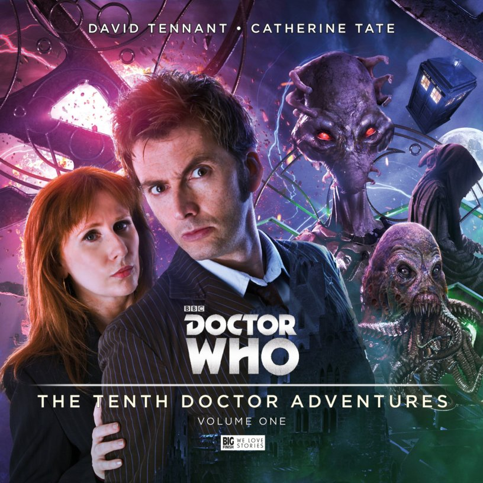Doutor e Donna viagem na TARDIS. Encontrando problemas.
Legendado
Doctor Who: As aventuras do décimo doutor Volume 2 (Em Breve)
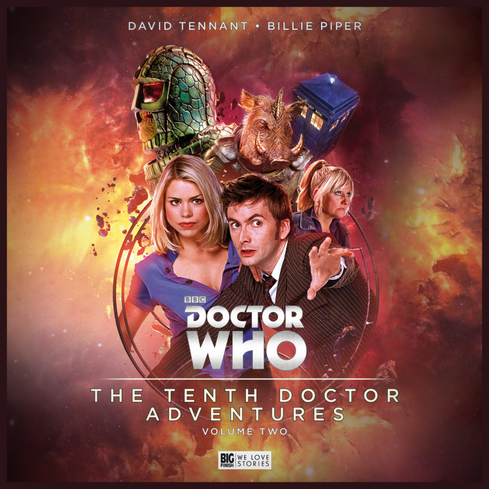Uma nova aventura do doutor junto com a rose
(Legendado)
Jenny – A Filha do Doutor – Bens roubados
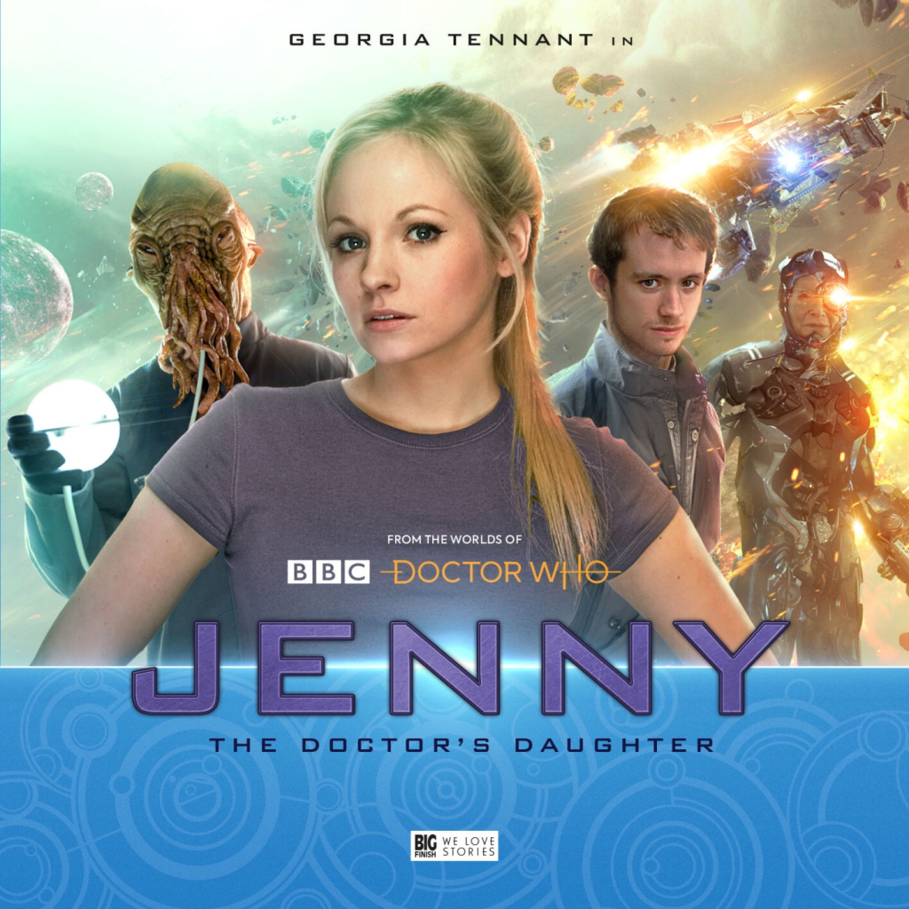As aventuras da filha do doutor.
Legendado
11º Doctor
12º Doctor
13ª Doctor
Créditos dos links dos Videos, das imagens e Textos: Universo Who, Os Mestres de Luxor, Parceria Who e Senhor Secreto